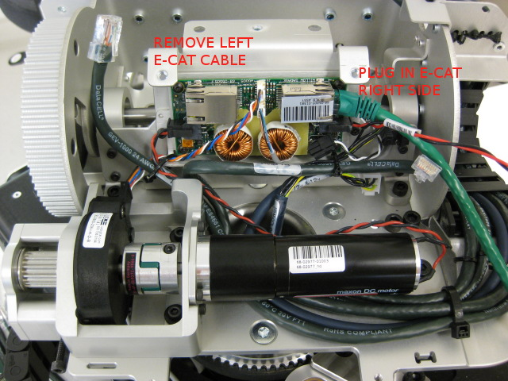

All motors must run through EE motor test before this test. Motors must have caster coupler and gears installed before this test.
You must be grounded for the this step.
Mount the motor in the stand as shown. Connect the encoder and power cables to the appropriate spot on the motor board in the stand.

Connect the green EtherCAT cable from the qualification bench to the MCB. Make sure the red and black power cable from the MCB to the power board is connected (this should always be there).
This test will run the motor through a hysteresis test. Afterwards, it may ask you to examine the results. You will see a plot of motor effort versus position, and a plot of velocity versus position. If you examine this result, make sure of two things:
* Motor effort is even, no rough patches.
* The velocity plot does not touch zero. If it does, this could be caused by a scratch on the encoder.
If you have any doubt about the quality of the motor, press "Fail". Do not pass any component you are unsure of.
Press 'Continue' to proceed.